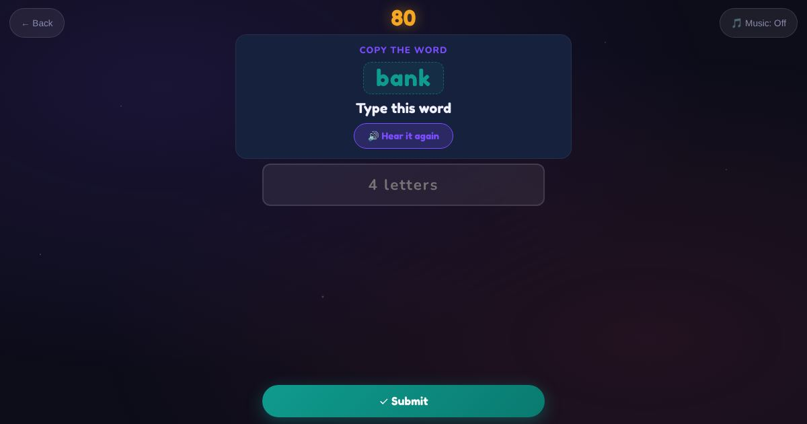

For teachers and tutors
About Level Check
A placement check for teachers and tutors of adult pre-level learners. It covers every skill: letters and sounds, reading, writing, listening, numbers, everyday English and digital skills. Each skill moves up a stage only where the learner has shown the one below. It ends with an indicative ACSF level (Pre Level 1 Stage A, Stage B, or Level 1) and a report of strengths and gaps to confirm in an interview.

How to play
- Your teacher gives you the link.
- Answer each round as well as you can.
- Show your teacher the results.
Play it as a class
Run it for the whole class from the Teacher Game. Every student's report comes back to the teacher's screen.